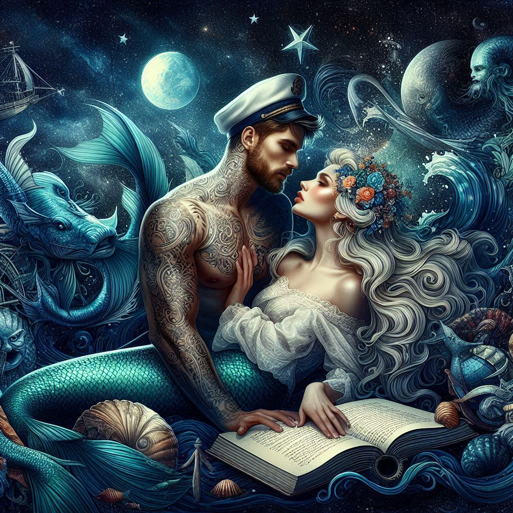

Un jour, lors d'une tempête violente, le marin sauva la sirène des filets d'un pêcheur. À cet instant, leurs regards se croisèrent et un lien indéfectible se forma entre eux.
Une Romance Interdite
Dans les profondeurs de l'océan, une sirène et un marin vivent une histoire d'amour éternelle, défiant les lois de la nature et créant une légende immortelle.
Leur Rencontre
Un Amour à Travers les Étoiles
Chaque soir, la sirène remontait à la surface pour retrouver son bien-aimé. Ensemble, ils contemplaient les étoiles et rêvaient d'un avenir où ils pourraient être ensemble sans obstacles.
Une Légende Intemporelle
Leur histoire devint une légende, transmise à travers les âges, symbolisant l'amour éternel et la force de deux cœurs destinés l'un à l'autre, malgré les barrières de leurs mondes différents.